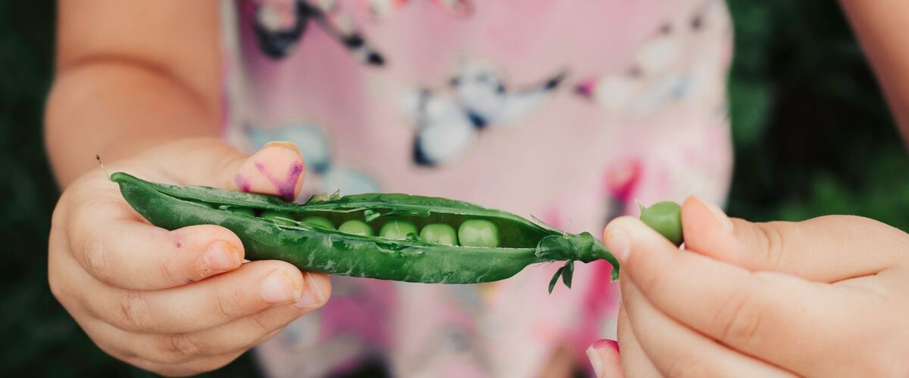

Growing Peas in Oregon and Washington
Peas love a cool Northwest spring. Here's when to sow them where you live, which kind to grow, and how to keep them producing until summer heat arrives.
Peas are one of the first crops into the ground each spring and one of the best suited to the Northwest. They like cool weather, handle light frost, and stop producing once summer turns hot. A long, mild spring like ours gives them plenty of time.
When to plant
Pea seeds sprout in cool soil, from about 40°F, though they come up faster once the soil reaches the 50s. Rainline Garden's planting windows for peas:
- Portland and the west side: Mar 1 – Apr 12. See Portland's pea page.
- Spokane and the inland Northwest: Apr 1 – May 13.
- Bend and the high desert: Apr 28 – Jun 9.
The earlier part of each window is better. Peas sown late run into heat just as they start to flower.
Which kind to grow
- Shelling peas (also called English or garden peas) are grown for the round peas inside. You shell them and eat the peas.
- Snap peas have thick, sweet pods you eat whole, peas and all.
- Snow peas are picked flat, before the peas swell, and are common in stir-fries. Oregon Sugar Pod II is an Oregon-bred snow pea that's widely grown here.
Each kind comes in tall, vining varieties that need a 5 to 6 foot trellis, and in short bush varieties that grow 2 to 3 feet tall. Bush types still do better with a little support, like a short fence or twiggy branches.
How to plant
- Choose a sunny spot with soil that drains. Pea seeds can rot in cold, waterlogged ground, which is why raised beds help in wet springs.
- Put the trellis up first, so you don't disturb the roots later.
- Sow seeds about 1 inch deep and 1 to 2 inches apart along the base of the trellis.
- Protect seedlings from slugs and birds, both of which go after young pea shoots. See dealing with slugs.
Peas, like beans, work with soil bacteria that take nitrogen from the air, so they need little or no fertilizer. A pea inoculant, a powder of these bacteria sold next to the seeds, can help in beds where peas haven't grown before.
Harvest
- Shelling peas: when the pods are plump and still bright green.
- Snap peas: when the pods are round and full but still crisp.
- Snow peas: while the pods are still flat.
Pick every day or two. The more you pick, the more the plants keep flowering. Peas lose sweetness quickly after picking, so eat or chill them soon.
Once summer heat arrives, production slows and powdery mildew often coats the leaves. That's the natural end of the season. Cut the plants off at the ground and leave the roots in the soil, then use the space for a second crop.